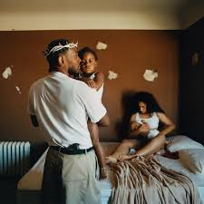
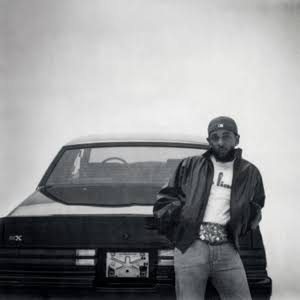

Section.80 (2011)
Section.80 is kedrick's debut studio album releasing on July 2, 2011, by Top Dawg Entertainment (TDE). In the years leading up to its release, Lamar produced various mixtapes under the moniker K.Dot. In 2010, Lamar released Overly Dedicated, his fourth solo mixtape. Shortly after its release, he began working on Section.80.
Lamar began working on the album sometime in January 2011.[4] The album was recorded at Top Dawg Studios in Carson, California. Most of the album was written in Lamar's mother's kitchen and his tour bus.[4][5] While recording the album, Lamar wished for it to be "as organic as possible,"[3] at times leaving songs unfinished for extended periods of time. The title, Section.80, is a combination of Section 8 Housing and the decade that Kendrick was born in—the 1980s. The subject matter of the projectranges from Black people’s strife due to the missteps of the Reagan Administration in the 1980s, women's issues, drug abuse, and conspiracy theories about the government; all of this without sacrificing precise, agile lyricism.
Most Streamed Tracks
Good Kid m.A.A.d City (2012)
Good Kid, M.A.A.D City (stylized as good kid, m.A.A.d city) is kedrick lamar's second studio album. It was released on October 22, 2012, by Interscope Records, Top Dawg Entertainment and Dr. Dre's Aftermath Entertainment. The album features guest appearances from Drake, Dr. Dre, Jay Rock, Anna Wise and MC Eiht. It is Lamar's first major label album, after his independently released debut album Section.80 in 2011 and his signing to Aftermath and Interscope the following year.
Good Kid, M.A.A.D City was recorded mostly at several studios in California, with producers such as Dr. Dre, Just Blaze, Pharrell Williams, Hit-Boy, Scoop DeVille, Jack Splash, and T-Minus, among others, contributing to the album. Billed as a "short film by Kendrick Lamar" on the album cover, the concept album tells a coming-of-age story about Lamar's adolescence surrounded by the drug-infested streets and gang lifestyle of his native Compton. Good Kid, M.A.A.D City received widespread acclaim from critics, who praised its thematic scope and Lamar's lyrics. The album debuted at number two on the US Billboard 200, selling 242,000 copies in its first week, earning the highest first-week hip-hop album sales of 2012 from a male artist. It also became Lamar's first album to enter the UK Albums Chart, peaking at number 16, and entering the UK R&B Albums Chart at number two.
Most Streamed Tracks
To Pimp A Butterfly (2015)
To Pimp a Butterfly is the third studio album by the American rapper Kendrick Lamar. It was released on March 15, 2015, by Top Dawg Entertainment, Aftermath Entertainment and Interscope Records. This album’s concept explores themes of self-love and hate, fame, depression, violence, race, and politics through a spoken-word poem that interweaves between songs, leading up to the climax. The poem is wrapped up on the final track, “Mortal Man,” where it is revealed that Kendrick was reading the poem to 2Pac all along. In an interview with MTV, Kendrick explained that the working title for the album was ‘Tu Pimp a Caterpillar,’ which spells out ‘TuPAC’ when abbreviated. It was changed to ‘butterfly’ in order to symbolize Kendrick’s personal character growth and his overall resiliency following success within the music industry. The album was heavily inspired by Lamar’s trip to South Africa in 2014, where he visited historical sites such as Nelson Mandela’s jail cell, birthing recurring motifs like Apartheid, distinctions between African and American culture, or institutionalization, among many others. Kendrick creates many allegorical comparisons between Compton and South Africa, especially on the song “Momma.”
Most Streamed Tracks
- # 1 Alright(1.08B)
- # 2 King Kunta(763.4M)
- # 3 Wesley's Theory(269.3M)
DAMN. (2017)
Damn (stylized as DAMN.) is the fourth studio album by the American rapper Kendrick Lamar, released on April 14, 2017, by Top Dawg Entertainment, Aftermath Entertainment, and Interscope Records. The album centers on whether human flaws stem from a malicious choice (wickedness) or a vulnerable, fearful human state (weakness). Standard track order (1 through 14) portrays a repentant Kendrick leaning into faith and humility. Listening to the album in reverse (popularized by the Collector's Edition) paints a tragic narrative where Kendrick succumbs to his vices and meets his demise.
Most Streamed Tracks
- # 1 HUMBLE(3.19B)
- # 2 Love Feat Zacari(1.99B)
- # 3 DNA(1.5B)

Mr. Morale & the Big Steppers (2022)
Mr. Morale & the Big Steppers is the fifth studio album by the American rapper Kendrick Lamar, released on May 13, 2022, by PGLang, Top Dawg Entertainment (TDE), Aftermath Entertainment, and Interscope Records. The album serves as his first release under his creative company PGLang, and his final project with both TDE and Aftermath. Mr. Morale & the Big Steppers is a concept album that analyzes and reflects on his life experiences during his therapy journey. Its lyrics touch on a variety of personal themes, including childhood and generational trauma, infidelity, and celebrity worship. Primarily a conscious hip-hop record, the album experiments with minimalist production while incorporating elements of jazz, R&B, trap, and soul.
Most Streamed Tracks
- # 1 N95(607.3M)
- # 2 Die Hard(501.5M)
- # 3 United In Grief(437.4M)
GNX (2024)
Kendrick Lamar’s GNX—his surprise-release sixth studio album—marks a monumental shift in his career. It is his first album to be released outside of the Top Dawg Entertainment umbrella and follows a high-profile feud with Drake. GNX is the shortest of his studio albums to date with a runtime of 44 minutes and 20 seconds and Stylistically, GNX carries distinctive west coast cruiser vibes apropos of its cover art, featuring Kendrick leaning against a 1987 Buick GNX. In this case, “GNX” stands for “Grand National Experiment.” Kendrick makes distinct reference to this vehicle throughout the project. most critics would refer to this project as lamars's most inconcise and directionless one to date but that doesn't mean the album isn't good being that it received a rating of 87 out of 100 from 22 critic scores.
Most Streamed Tracks
